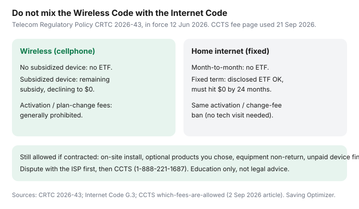

Internet · Canada
Internet ETFs After CRTC 2026-43: What Still Applies to Home Internet in Canada
In 2026 a lot of Canadians heard “the CRTC banned cancellation fees” and cancelled a home internet term. Then the last bill had an early cancellation fee anyway. The mix-up is almost always the same: Telecom Regulatory Policy CRTC 2026-43 did change fee rules for both internet and wireless — but the no-ETF-without-a-phone-subsidy sentence is Wireless Code language. The Internet Code still lets a disclosed fixed-term internet ETF exist, shrinking to $0 by 24 months.
This is a date-stamped explainer for household bills, not a lawyer. Pair it with the three-quote sheet so the ETF is a cell, not a surprise. PFC thread to remember: the wireless-only PSA (r/PersonalFinanceCanada, 2026) is the warning label.
Disclosure: Education only — not legal advice, not a CCTS result, not an ISP partnership. Saving Optimizer does not file complaints for you. No affiliate angle on this page.
Key takeaways
- 12 June 2026: most activation, setup, and no-tech-visit plan-change fees are prohibited for internet and wireless (CCTS explainer posted 2 Sep 2026).
- Wireless: no ETF when no subsidized device. Home internet: no ETF on indeterminate/month-to-month; fixed-term ETF still allowed if set out in the contract and reduced to $0 by the lesser of 24 months or the term.
- On-site technician install, optional products you chose, equipment non-return, and unpaid device financing can still be billed if contracted.
- Internet Code trial: 15 days (30 with disability self-ID) when an ETF applies; usage cap is half the monthly allowance (double for the extended trial).
- ISP first, then CCTS (1-888-221-1687). CCTS will not rewrite an allowed contracted dollar amount.
Wireless ETF ban vs Internet Code: do not conflate the two
Two codes, two products:
| Mobile wireless | Home internet | |
|---|---|---|
| No subsidized device, month-to-month | No ETF | No ETF |
| No subsidized device, fixed term | No ETF (2026-43 Wireless Code amendment) | ETF allowed if disclosed; only for lesser of 24 months or term; must hit $0 by the end of that period |
| Subsidized device / tab | Remaining subsidy, declining to $0 (wireless rules) | Rare on home internet; if a subsidized device exists, Code G.2-style subsidy math applies |
| Activation / no-visit plan change | Generally prohibited | Generally prohibited |
The Government of Canada news release (March 2026) used broad “eliminating extra fees to activate, change, or cancel” language. The legal instrument is narrower on cancel: it killed the old wireless “$50 or 10% of remaining months” style ETF when there is no phone subsidy. It did not delete Internet Code G.3.i for fixed-term home internet. CCTS says the quiet part out loud: providers “can also charge certain cancellation fees, if agreed to in the contract, such as … early cancellation for Internet services for a fixed term contract.”

What CRTC 2026-43 changed for activation and modification fees
Section 27.04 of the Telecommunications Act, as implemented in 2026-43, stops fees whose main purpose is to discourage activating, modifying, or (for the wireless no-subsidy case) cancelling. CCTS translates that for households:
- Generally not allowed on or after 12 June 2026: new-account / connection / setup / enrollment fees; installation fees with no technician visit; change fees with no visit (plan changes, speed changes).
- Still allowed: reasonable fees when a technician must physically install at the premises; fees for optional products you explicitly chose; reconnection after non-payment; bill reprint; some legacy maintenance fees; contracted equipment non-return; unpaid device financing; internet fixed-term ETFs.
CCTS also flags a handful of renamed device/SIM/shipping charges (Bell device-handling, TELUS SIM/eSIM, Rogers device set-up/shipping/SIM) that the CRTC was still considering. Those are mostly wireless-hardware adjacent. If your internet “activation” was renamed “processing,” it still has to survive 2026-43. Notice of Consultation work (including 2026-134 / 2026-155-era fee scrutiny) is the live regulatory overlay — date-stamp any blog that pretends the file is closed forever.
How to read your contract’s early cancellation fee schedule
Internet Code contracts must show, if applicable: the total ETF, the amount it decreases each month, and the date you are free of it (or an outside limit). Ask for those three numbers in one email.
Worked shape (illustrative, not a carrier’s tariff): $360 total, $15 less each complete month, $0 at month 24. Cancel at the start of month 10 and a remaining 14 × $15 = $210 could still be owing — plus any unreturned gateway. A month that has partly elapsed counts as complete when calculating the decline. If the contract is month-to-month, that schedule should not exist.
Winback offers that look like $40/month often create this schedule. Price the ETF as part of 24-month CAD, not as fine print you skip because “CRTC banned fees.”
Equipment non-return charges vs true ETFs
Keep them in separate columns. The ETF is for leaving the term. The non-return charge is for keeping the Helix/Ignite/Fizz/Bell gateway. CCTS still treats non-return as potentially allowed. Photograph serial numbers on day one; use the ISP’s return kit; get a drop-off receipt. A $200 “unreturned modem” on top of a lawful ETF is how a cheap independent switch becomes an expensive tantrum.
Trial periods and cooling-off-style protections under the Internet Code
Two different clocks:
- Trial period (when an ETF applies to a new customer): minimum 15 calendar days from service start (30 if you self-identify as a person with a disability). Usage limit = half the monthly usage in the contract (double for the disability trial), including how the ISP specifies “half of unlimited.” Cancel without ETF if you are under the cap and return gear in near-new condition with packaging if required.
- 45-day mismatch cancel: if the ISP fails to send the permanent contract on time, or the written contract conflicts with what you agreed, you may cancel within 45 calendar days of the start without ETF or other penalty.
Key contract terms generally cannot get worse during a commitment period without consent (price-up is not a “benefit”). After the commitment period, at least 60 days’ notice before changing a key term. That is how list-price cliffs are supposed to be telegraphed — you still have to read the notice.
When to escalate to CCTS if fees look prohibited
- Ask the ISP, in writing, which fee code they used and why it is allowed after 12 June 2026.
- Give them a reasonable chance (CCTS expects a real contact, not one ignored tweet).
- Keep dates, names, and screenshots. Pay undisputed amounts so you are not cut off for the rest of the bill.
- File at ccts-cprst.ca or 1-888-221-1687 (TTY 1-844-713-3010). Mail: P.O. Box 56067 Minto Place RO, Ottawa ON K1R 7Z1.
The Internet Code applies in full to listed large facilities-based ISPs (Bell, Cogeco, Eastlink, Northwestel, Rogers, SaskTel, TELUS, Videotron, Xplore). Smaller resellers may still sit in CCTS membership even when a given Code clause is written for the large-FTTP/cable list — check CCTS participation if you are on TekSavvy, Oxio, or Fizz. Do not skip the ISP step.
Worked examples: leaving mid-term vs waiting out the promo
| Situation | What to add up | Usual cheaper path |
|---|---|---|
| Month-to-month, list price $110, independent $55 flat | ETF $0; maybe gateway return | Switch; 2026-43 should block a fake “activation” on the new ISP if no tech visit |
| Month 8 of 24, ETF $15 × 16 remaining = $240, independent saves $40/mo | $240 vs $40 × 16 = $640 | Switch — ETF is smaller than the remaining save |
| Month 8, same ETF $240, independent saves $8/mo | $240 vs $8 × 16 = $128 | Wait or winback; the ETF eats the save |
| Inside 15-day trial, under usage cap, dislike the upload | Return gear on time | Cancel under the trial; do not “wait and see” until day 20 |
| Leaving a term to join Connecting Families $20 | Retail ETF may still apply; ISED notes promotional/contract remainders can be owing | Ask the new and old ISP; do not assume CFI waives a Rogers term |
If the math is close, waiting is a valid adult decision. If the math is not close, do not stay because a wireless meme said fees died.
Sources & date stamps
- Telecom Regulatory Policy CRTC 2026-43 (12 Mar 2026) — activation/modification definition; Wireless Code G.3.i no ETF without subsidized device.
- CRTC Internet Code, simplified — G.3 internet ETFs; trial period 15/30 days and half-usage rule; 45-day mismatch cancel; 60-day key-term notices. Used 21 Sep 2026.
- CCTS, “New rules: What fees can internet and wireless phone providers charge?” (2 Sep 2026) — 12 Jun 2026 effective date; allowed vs prohibited list; internet fixed-term ETF still listed as chargeable; renamed-fee pause note.
- Canada.ca news release, 12 Mar 2026 — plain-language overview (broader than the legal distinction; use the Code for bills).
- r/PersonalFinanceCanada PSA that 2026 “no ETF” is wireless-only — community warning, not a statute.
Frequently asked questions
Did the CRTC ban all internet cancellation fees in 2026?
No. CRTC 2026-43 (in force 12 June 2026) generally bans activation and modification fees for internet and wireless, and bans wireless ETFs when no subsidized phone was provided. Home internet on a fixed term can still have a disclosed ETF that must fall to $0 by the lesser of 24 months or the term’s end. Month-to-month internet cannot have an ETF.
What is the difference between an ETF and a modem non-return charge?
An ETF is a contract-exit fee. A non-return charge is for equipment you did not send back. CCTS still lists equipment non-return and unpaid device financing as charges that can be allowed if they are in the contract. Return the gateway.
How long is the internet trial period?
When a new customer is subject to an ETF, the Internet Code requires at least 15 calendar days (30 if you self-identify as a person with a disability), starting when service begins. Usage during the trial is capped at half the monthly allowance in the contract (double that for the disability trial). Cancel inside the window, under the usage cap, and return gear in near-new condition.
Can CCTS wipe a fee the CRTC still allows?
CCTS says it cannot rewrite the dollar amount of a contracted allowed fee. It can help if the fee violates the contract, the Codes, or the 2026-43 prohibitions. Try the ISP first, keep dates, then file.
My Reddit thread said ‘no ETF’ after June 2026. Why did Rogers still quote one?
That PSA is the wireless rule. A 24-month home internet term is the Internet Code. Ask for the schedule in writing; do not argue from a phone-plan meme.